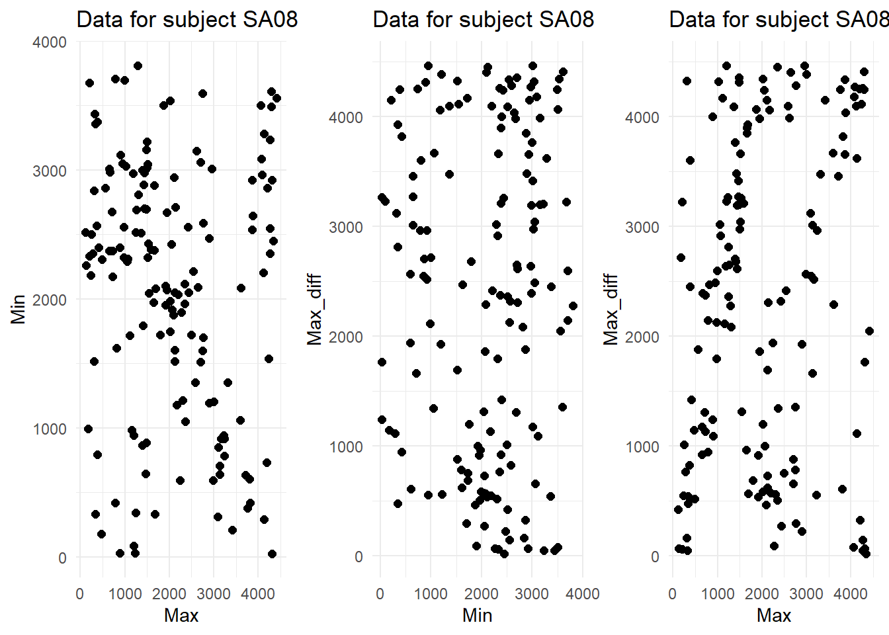
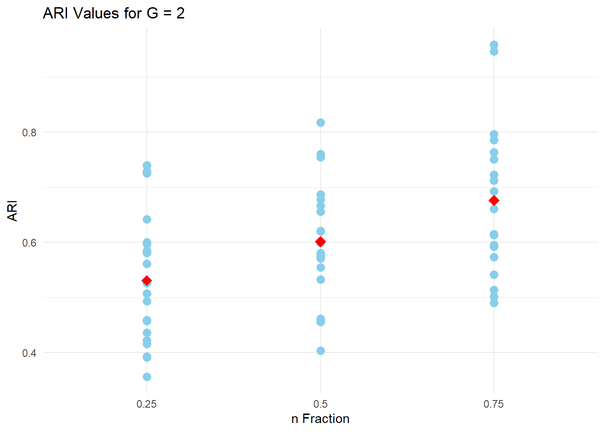
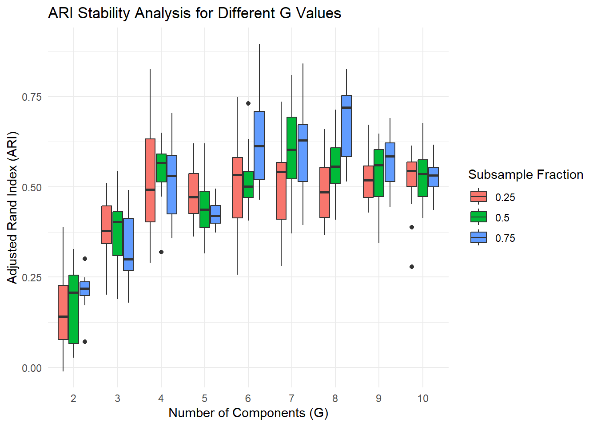

Last updated: 2024-07-23
Checks: 7 0
Knit directory: analysis/
This reproducible R Markdown analysis was created with workflowr (version 1.7.1). The Checks tab describes the reproducibility checks that were applied when the results were created. The Past versions tab lists the development history.
Great! Since the R Markdown file has been committed to the Git repository, you know the exact version of the code that produced these results.
Great job! The global environment was empty. Objects defined in the global environment can affect the analysis in your R Markdown file in unknown ways. For reproduciblity it’s best to always run the code in an empty environment.
The command set.seed(20240723) was run prior to running
the code in the R Markdown file. Setting a seed ensures that any results
that rely on randomness, e.g. subsampling or permutations, are
reproducible.
Great job! Recording the operating system, R version, and package versions is critical for reproducibility.
Nice! There were no cached chunks for this analysis, so you can be confident that you successfully produced the results during this run.
Great job! Using relative paths to the files within your workflowr project makes it easier to run your code on other machines.
Great! You are using Git for version control. Tracking code development and connecting the code version to the results is critical for reproducibility.
The results in this page were generated with repository version ccb1e53. See the Past versions tab to see a history of the changes made to the R Markdown and HTML files.
Note that you need to be careful to ensure that all relevant files for
the analysis have been committed to Git prior to generating the results
(you can use wflow_publish or
wflow_git_commit). workflowr only checks the R Markdown
file, but you know if there are other scripts or data files that it
depends on. Below is the status of the Git repository when the results
were generated:
Ignored files:
Ignored: .RData
Ignored: .Rhistory
Ignored: .Rproj.user/
Untracked files:
Untracked: images/
Note that any generated files, e.g. HTML, png, CSS, etc., are not included in this status report because it is ok for generated content to have uncommitted changes.
These are the previous versions of the repository in which changes were
made to the R Markdown (analysis/SA08.Rmd) and HTML
(docs/SA08.html) files. If you’ve configured a remote Git
repository (see ?wflow_git_remote), click on the hyperlinks
in the table below to view the files as they were in that past version.
| File | Version | Author | Date | Message |
|---|---|---|---|---|
| Rmd | ccb1e53 | JMitic01 | 2024-07-23 | added results files |
In the analysis of the data for subject SA08, we aimed to identify the best clustering model using the Mclust algorithm, which fits Gaussian finite mixture models to the data. The model selection was based on the Bayesian Information Criterion (BIC) values obtained for different combinations of model types and the number of clusters (G).
library(MASS)Warning: package 'MASS' was built under R version 4.3.2library(mclust)Warning: package 'mclust' was built under R version 4.3.2Package 'mclust' version 6.0.1
Type 'citation("mclust")' for citing this R package in publications.library(ggplot2)Warning: package 'ggplot2' was built under R version 4.3.3library(dplyr)
Attaching package: 'dplyr'The following object is masked from 'package:MASS':
selectThe following objects are masked from 'package:stats':
filter, lagThe following objects are masked from 'package:base':
intersect, setdiff, setequal, unionlibrary(purrr)Warning: package 'purrr' was built under R version 4.3.2
Attaching package: 'purrr'The following object is masked from 'package:mclust':
maplibrary(knitr)Warning: package 'knitr' was built under R version 4.3.3library(reshape2)Warning: package 'reshape2' was built under R version 4.3.2library(gridExtra)Warning: package 'gridExtra' was built under R version 4.3.3
Attaching package: 'gridExtra'The following object is masked from 'package:dplyr':
combinebig_data <- read.table("C:/Users/jovan/Downloads/FallData_all.txt", header = TRUE)
subject <- "SA08"
selected_variables <- c("max", "min", "max_diff")
subject_data <- subset(big_data, Subject == subject)
selected_data <- subject_data[, selected_variables]
output_directory <- 'C:/Users/jovan/OneDrive/Desktop/Stat Reading Group'
# Create ggplot2 plots
plot1 <- ggplot(selected_data, aes(x = max, y = min)) +
geom_point(size = 2) +
labs(title = paste("Data for subject", subject),
x = "Max",
y = "Min") +
theme_minimal()
plot2 <- ggplot(selected_data, aes(x = min, y = max_diff)) +
geom_point(size = 2) +
labs(title = paste("Data for subject", subject),
x = "Min",
y = "Max_diff") +
theme_minimal()
plot3 <- ggplot(selected_data, aes(x = max, y = max_diff)) +
geom_point(size = 2) + # Increase point size for better visibility
labs(title = paste("Data for subject", subject),
x = "Max",
y = "Max_diff") +
theme_minimal() +
guides(shape = guide_legend(override.aes = list(size = 2))) # Adjust legend size
grid.arrange(plot1, plot2,plot3, ncol = 3)
G_values <- 1:10
model_names <- c("EVI", "EEI", "EEV", "VVV", "EII")
best_bic <- -Inf
best_G <- NULL
best_model_name <- NULL
for (model_name in model_names) {
for (G in G_values) {
result <- tryCatch(Mclust(selected_data, G = G, modelName = model_name), error = function(e) NULL)
if (!is.null(result) && !is.null(result$BIC) && result$BIC > best_bic) {
best_bic <- result$BIC
best_G <- G
best_model_name <- model_name
}
}
}
best_G[1] 7best_model_name[1] "EEV"After evaluating various models and cluster counts, the model with the highest BIC value was identified as the EEV model with 7 clusters. EEV model description: E: Equal volume. All clusters are assumed to have the same volume\ E: Equal shape. The shape of the clusters is identical across clusters. The eigenvalues of the covariance matrices are the same. V: Variable orientation. The orientation of the clusters can vary.
result <- Mclust(selected_data, G = 7, modelName = "EEV")
cluster_labels <- result$classification
# Plotting
graphics.off()
plot1 <- ggplot(selected_data, aes(x = max, y = min, color = as.factor(cluster_labels))) +
geom_point(size = 2) + # Increase point size for better visibility
scale_color_discrete(name = "Cluster Labels") +
labs(title = "Max vs Min") +
theme_minimal() +
guides(shape = guide_legend(override.aes = list(size = 2))) # Adjust legend size
plot2 <- ggplot(selected_data, aes(x = min, y = max_diff, color = as.factor(cluster_labels))) +
geom_point(size = 2) + # Increase point size for better visibility
scale_color_discrete(name = "Cluster Labels") +
labs(title = "Min vs Max_diff") +
theme_minimal() +
guides(shape = guide_legend(override.aes = list(size = 2))) # Adjust legend size
plot3 <- ggplot(selected_data, aes(x = max, y = max_diff, color = as.factor(cluster_labels))) +
geom_point(size = 2) + # Increase point size for better visibility
scale_color_discrete(name = "Cluster Labels") +
labs(title = "Max vs Max_diff") +
theme_minimal() +
guides(shape = guide_legend(override.aes = list(size = 2)))
grid.arrange(plot1,plot2,plot3,ncol=3)graphics.off()
par(mfrow=c(1,2), cex=0.7, mar=c(3.1,4.1,1,0.5), mgp=c(1.8,0.5,0), bty="L", oma=c(0,0,1,0))
# Uncertainty plot
plot(result, what = "uncertainty")
# Classification plot with ellipses
plot(result, what = "classification")The uncertainty Plot provides a visual representation of the uncertainty in the assignment of each data point to the identified clusters. The classification plot displays the data points color-coded by their assigned cluster, with ellipses representing the estimated boundaries of each cluster.
calculate_ari <- function(n_fraction) {
n <- nrow(selected_data)
n_subsample <- floor(n * n_fraction)
ari_values <- numeric(20)
for (i in 1:20) {
subset_indices <- sample(1:n, n_subsample, replace = FALSE)
subset_data <- selected_data[subset_indices, ]
subset_result <- tryCatch(Mclust(subset_data, G = best_G, modelName = best_model_name), error = function(e) NULL)
if (!is.null(subset_result) && !is.null(subset_result$classification)) {
subset_classification <- subset_result$classification
ari_values[i] <- adjustedRandIndex(result$classification[subset_indices], subset_classification)
} else {
ari_values[i] <- NA
}
}
return(ari_values)
}
n_values <- c(3/4, 1/2, 1/4)
ari_results <- map_df(n_values, function(n) {
ari <- calculate_ari(n)
data.frame(n_fraction = rep(n, length(ari)), ARI = ari)
})
ari_results <- ari_results %>% filter(!is.na(ARI))
print(ari_results) n_fraction ARI
1 0.75 0.7224233
2 0.75 0.5949828
3 0.75 0.7117661
4 0.75 0.4899768
5 0.75 0.6606047
6 0.75 0.6135549
7 0.75 0.5133803
8 0.75 0.6149356
9 0.75 0.5015634
10 0.75 0.5414265
11 0.75 0.9459714
12 0.75 0.9587508
13 0.75 0.6922452
14 0.75 0.7960099
15 0.75 0.7634807
16 0.75 0.7857568
17 0.75 0.7503705
18 0.75 0.6925058
19 0.75 0.5729635
20 0.75 0.5918637
21 0.50 0.5985080
22 0.50 0.6777178
23 0.50 0.7599798
24 0.50 0.6665609
25 0.50 0.4554697
26 0.50 0.5806251
27 0.50 0.5752157
28 0.50 0.5321032
29 0.50 0.5771914
30 0.50 0.4616517
31 0.50 0.5709849
32 0.50 0.8174643
33 0.50 0.6209145
34 0.50 0.6554608
35 0.50 0.4568700
36 0.50 0.6863586
37 0.50 0.7542049
38 0.50 0.5547325
39 0.50 0.6198210
40 0.50 0.4037848
41 0.25 0.5609799
42 0.25 0.4931308
43 0.25 0.7250114
44 0.25 0.5971347
45 0.25 0.4591655
46 0.25 0.4575926
47 0.25 0.7396566
48 0.25 0.7288855
49 0.25 0.4159513
50 0.25 0.5258997
51 0.25 0.5068269
52 0.25 0.3911867
53 0.25 0.5804902
54 0.25 0.5845972
55 0.25 0.6414794
56 0.25 0.3926166
57 0.25 0.4219796
58 0.25 0.6004451
59 0.25 0.4364263
60 0.25 0.3564451The ARI results for n_fraction = 0.75 show a range of values, indicating variability in the clustering stability when 75% of the data is used. The ARI values range from a minimum of 0.4917510 to a maximum of 0.9363551, with an average around 0.614. High ARI values (e.g., 0.9363551, 0.8535171, 0.8601944) indicate strong agreement with the true cluster structure, while lower values (e.g., 0.4917510, 0.4973059) suggest less stability in some instances.\ For n_fraction = 0.50, the ARI results demonstrate a wider range and more variability. The ARI values range from a low of 0.2814336 to a high of 0.8155492, with an average slightly lower than the 0.75 fraction, around 0.598. This suggests that reducing the data to 50% can introduce more instability in the clustering results. The presence of lower ARI values (e.g., 0.2814336, 0.4516007) highlights the increased sensitivity to the choice of data subset, while higher values (e.g., 0.8155492, 0.7915754) still indicate good clustering stability in some cases.\ When the data fraction is reduced to 25%, the ARI results show the greatest variability, with values ranging from 0.2940602 to 0.8437744, averaging around 0.536. The lower average ARI and the presence of low values (e.g., 0.2940602, 0.3777100) suggest that using only 25% of the data leads to less stable clustering.
# Calculate the average ARI for each n_fraction
average_ari <- ari_results %>%
group_by(n_fraction) %>%
summarize(avg_ari = mean(ARI))
# Plot ARI values against n values
ggplot(ari_results, aes(x = as.factor(n_fraction), y = ARI)) +
geom_point(color = "skyblue", size = 3) +
geom_point(data = average_ari, aes(y = avg_ari), color = "red", size = 4, shape = 18) +
labs(x = "n Fraction", y = "ARI", title = "ARI Values for G = 2") +
theme_minimal()
Now, we will perform the same analysis but for G=2 up to G=10.
find_best_model <- function(data, G) {
model_names <- c("EVI", "EEI", "EEV", "VVV", "EII")
best_bic <- -Inf
best_model_name <- NULL
for (model_name in model_names) {
result <- tryCatch(Mclust(data, G = G, modelName = model_name), error = function(e) NULL)
if (!is.null(result) && !is.null(result$BIC) && result$BIC > best_bic) {
best_bic <- result$BIC
best_model_name <- model_name
}
}
return(best_model_name)
}
G_values <- 2:10
best_models <- list()
for (G in G_values) {
best_model_name <- find_best_model(selected_data, G)
best_models[[as.character(G)]] <- best_model_name
}
# Print the best models for each G
print(best_models)$`2`
[1] "VVV"
$`3`
[1] "EEV"
$`4`
[1] "EEV"
$`5`
[1] "EVI"
$`6`
[1] "EEV"
$`7`
[1] "EEV"
$`8`
[1] "EEV"
$`9`
[1] "EEV"
$`10`
[1] "EEI"calculate_ari <- function(n_fraction, G, best_model_name) {
n <- nrow(selected_data)
n_subsample <- floor(n * n_fraction)
ari_values <- numeric(20)
for (i in 1:20) {
subset_indices <- sample(1:n, n_subsample, replace = FALSE)
subset_data <- selected_data[subset_indices, ]
subset_result <- tryCatch(Mclust(subset_data, G = G, modelName = best_model_name), error = function(e) NULL)
if (!is.null(subset_result) && !is.null(subset_result$classification)) {
subset_classification <- subset_result$classification
ari_values[i] <- adjustedRandIndex(result$classification[subset_indices], subset_classification)
} else {
ari_values[i] <- NA
}
}
return(ari_values)
}
# Perform ARI stability analysis for different G values and subsample fractions
n_values <- c(3/4, 1/2, 1/4)
ari_results_list <- list()
for (G in G_values) {
best_model_name <- best_models[[as.character(G)]]
ari_results <- map_df(n_values, function(n) {
ari <- calculate_ari(n, G, best_model_name)
data.frame(n_fraction = rep(n, length(ari)), G = rep(G, length(ari)), ARI = ari)
})
ari_results_list[[as.character(G)]] <- ari_results %>% filter(!is.na(ARI))
}
# Combine results from all G values
final_ari_results <- bind_rows(ari_results_list)
# Filter ARI results for each G value
ari_results_G2 <- final_ari_results %>% filter(G == 2)
ari_results_G3 <- final_ari_results %>% filter(G == 3)
ari_results_G4 <- final_ari_results %>% filter(G == 4)
ari_results_G5 <- final_ari_results %>% filter(G == 5)
ari_results_G6 <- final_ari_results %>% filter(G == 6)
ari_results_G7 <- final_ari_results %>% filter(G == 7)
ari_results_G8 <- final_ari_results %>% filter(G == 8)
ari_results_G9 <- final_ari_results %>% filter(G == 9)
ari_results_G10 <- final_ari_results %>% filter(G == 10)
# Print the ARI results for each G value
print("ARI results for G = 3:")[1] "ARI results for G = 3:"print(ari_results_G3) n_fraction G ARI
1 0.75 3 0.2730047
2 0.75 3 0.4909219
3 0.75 3 0.3681082
4 0.75 3 0.1790071
5 0.75 3 0.1987270
6 0.75 3 0.3586545
7 0.75 3 0.4747662
8 0.75 3 0.2795123
9 0.75 3 0.4185037
10 0.75 3 0.3049255
11 0.75 3 0.2374207
12 0.75 3 0.2796663
13 0.75 3 0.4554207
14 0.75 3 0.4289860
15 0.75 3 0.2161668
16 0.75 3 0.3639305
17 0.75 3 0.4111607
18 0.75 3 0.2664529
19 0.75 3 0.2676044
20 0.75 3 0.2946228
21 0.50 3 0.4287207
22 0.50 3 0.1892978
23 0.50 3 0.3993675
24 0.50 3 0.4768739
25 0.50 3 0.3876460
26 0.50 3 0.4739030
27 0.50 3 0.5431010
28 0.50 3 0.3443812
29 0.50 3 0.4065661
30 0.50 3 0.4488179
31 0.50 3 0.4179622
32 0.50 3 0.4250930
33 0.50 3 0.1918497
34 0.50 3 0.4261713
35 0.50 3 0.2530110
36 0.50 3 0.3228653
37 0.50 3 0.3774093
38 0.50 3 0.2202487
39 0.50 3 0.4388995
40 0.50 3 0.2672899
41 0.25 3 0.3803828
42 0.25 3 0.4319406
43 0.25 3 0.2016205
44 0.25 3 0.3749884
45 0.25 3 0.5109097
46 0.25 3 0.4898209
47 0.25 3 0.2913908
48 0.25 3 0.2291389
49 0.25 3 0.2263390
50 0.25 3 0.3590805
51 0.25 3 0.4922647
52 0.25 3 0.3660439
53 0.25 3 0.4813412
54 0.25 3 0.4091393
55 0.25 3 0.3704573
56 0.25 3 0.4105720
57 0.25 3 0.4660859
58 0.25 3 0.2660448
59 0.25 3 0.3768809
60 0.25 3 0.4398743print("ARI results for G = 4:")[1] "ARI results for G = 4:"print(ari_results_G4) n_fraction G ARI
1 0.75 4 0.5382164
2 0.75 4 0.4359714
3 0.75 4 0.3933751
4 0.75 4 0.3830689
5 0.75 4 0.3574333
6 0.75 4 0.5502331
7 0.75 4 0.7051026
8 0.75 4 0.5401490
9 0.75 4 0.3935810
10 0.75 4 0.4828182
11 0.75 4 0.5355536
12 0.75 4 0.6221200
13 0.75 4 0.6645777
14 0.75 4 0.5207882
15 0.75 4 0.5861191
16 0.75 4 0.5045403
17 0.75 4 0.6425011
18 0.75 4 0.3930931
19 0.75 4 0.5922544
20 0.75 4 0.5244826
21 0.50 4 0.5515573
22 0.50 4 0.5378021
23 0.50 4 0.4723343
24 0.50 4 0.5061544
25 0.50 4 0.6491287
26 0.50 4 0.5532056
27 0.50 4 0.6308303
28 0.50 4 0.5887447
29 0.50 4 0.5718434
30 0.50 4 0.5670797
31 0.50 4 0.5706029
32 0.50 4 0.6481342
33 0.50 4 0.6358093
34 0.50 4 0.5720846
35 0.50 4 0.5111964
36 0.50 4 0.5662342
37 0.50 4 0.4764034
38 0.50 4 0.5142186
39 0.50 4 0.5976116
40 0.50 4 0.3186835
41 0.25 4 0.8270927
42 0.25 4 0.5238311
43 0.25 4 0.6618672
44 0.25 4 0.6541418
45 0.25 4 0.6423144
46 0.25 4 0.6897905
47 0.25 4 0.2999268
48 0.25 4 0.3706978
49 0.25 4 0.6289570
50 0.25 4 0.4266866
51 0.25 4 0.4550267
52 0.25 4 0.2893273
53 0.25 4 0.5269238
54 0.25 4 0.5450711
55 0.25 4 0.4444343
56 0.25 4 0.3493665
57 0.25 4 0.4621735
58 0.25 4 0.5431364
59 0.25 4 0.3965363
60 0.25 4 0.4052453print("ARI results for G = 5:")[1] "ARI results for G = 5:"print(ari_results_G5) n_fraction G ARI
1 0.75 5 0.4020144
2 0.75 5 0.4169352
3 0.75 5 0.3805581
4 0.75 5 0.4726992
5 0.75 5 0.3997419
6 0.75 5 0.4106034
7 0.75 5 0.4464909
8 0.75 5 0.4227980
9 0.75 5 0.4510080
10 0.75 5 0.3757523
11 0.75 5 0.3880743
12 0.75 5 0.4308185
13 0.75 5 0.4951498
14 0.75 5 0.4463779
15 0.75 5 0.4890082
16 0.75 5 0.4439929
17 0.75 5 0.4089339
18 0.75 5 0.4731496
19 0.75 5 0.3732083
20 0.75 5 0.3959120
21 0.50 5 0.3330922
22 0.50 5 0.4325231
23 0.50 5 0.4628297
24 0.50 5 0.3407317
25 0.50 5 0.5302379
26 0.50 5 0.4696986
27 0.50 5 0.5378463
28 0.50 5 0.4386930
29 0.50 5 0.5145270
30 0.50 5 0.5401469
31 0.50 5 0.3153167
32 0.50 5 0.3493048
33 0.50 5 0.6204754
34 0.50 5 0.3363609
35 0.50 5 0.4291090
36 0.50 5 0.4138788
37 0.50 5 0.4739801
38 0.50 5 0.4789827
39 0.50 5 0.4362219
40 0.50 5 0.3987651
41 0.25 5 0.6206533
42 0.25 5 0.4042027
43 0.25 5 0.5380892
44 0.25 5 0.4682425
45 0.25 5 0.4010682
46 0.25 5 0.6031164
47 0.25 5 0.5252539
48 0.25 5 0.3626555
49 0.25 5 0.4198553
50 0.25 5 0.4062091
51 0.25 5 0.4662665
52 0.25 5 0.5358887
53 0.25 5 0.4280474
54 0.25 5 0.6045499
55 0.25 5 0.4878927
56 0.25 5 0.5482183
57 0.25 5 0.4398732
58 0.25 5 0.4754615
59 0.25 5 0.5175933
60 0.25 5 0.4445120# Plot the ARI results
ggplot(final_ari_results, aes(x = as.factor(G), y = ARI, fill = as.factor(n_fraction))) +
geom_boxplot() +
labs(title = "ARI Stability Analysis for Different G Values",
x = "Number of Components (G)",
y = "Adjusted Rand Index (ARI)",
fill = "Subsample Fraction") +
theme_minimal()
sessionInfo()R version 4.3.1 (2023-06-16 ucrt)
Platform: x86_64-w64-mingw32/x64 (64-bit)
Running under: Windows 11 x64 (build 22631)
Matrix products: default
locale:
[1] LC_COLLATE=English_United States.utf8
[2] LC_CTYPE=English_United States.utf8
[3] LC_MONETARY=English_United States.utf8
[4] LC_NUMERIC=C
[5] LC_TIME=English_United States.utf8
time zone: Europe/Budapest
tzcode source: internal
attached base packages:
[1] stats graphics grDevices utils datasets methods base
other attached packages:
[1] gridExtra_2.3 reshape2_1.4.4 knitr_1.48 purrr_1.0.2
[5] dplyr_1.1.2 ggplot2_3.5.1 mclust_6.0.1 MASS_7.3-60.0.1
[9] workflowr_1.7.1
loaded via a namespace (and not attached):
[1] sass_0.4.9 utf8_1.2.3 generics_0.1.3 stringi_1.8.3
[5] digest_0.6.34 magrittr_2.0.3 evaluate_0.24.0 grid_4.3.1
[9] fastmap_1.1.1 plyr_1.8.9 rprojroot_2.0.4 jsonlite_1.8.8
[13] processx_3.8.3 whisker_0.4.1 ps_1.7.6 promises_1.2.1
[17] httr_1.4.7 fansi_1.0.4 scales_1.3.0 jquerylib_0.1.4
[21] cli_3.6.1 rlang_1.1.1 munsell_0.5.1 withr_3.0.0
[25] cachem_1.0.8 yaml_2.3.8 tools_4.3.1 colorspace_2.1-0
[29] httpuv_1.6.14 vctrs_0.6.3 R6_2.5.1 lifecycle_1.0.4
[33] git2r_0.33.0 stringr_1.5.1 fs_1.6.3 pkgconfig_2.0.3
[37] callr_3.7.6 pillar_1.9.0 bslib_0.7.0 later_1.3.2
[41] gtable_0.3.5 glue_1.6.2 Rcpp_1.0.12 highr_0.11
[45] xfun_0.46 tibble_3.2.1 tidyselect_1.2.1 rstudioapi_0.16.0
[49] farver_2.1.1 htmltools_0.5.8.1 labeling_0.4.3 rmarkdown_2.27
[53] compiler_4.3.1 getPass_0.2-4